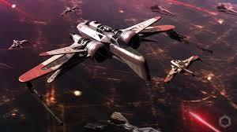
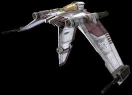
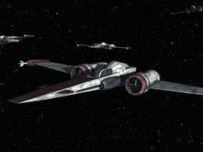
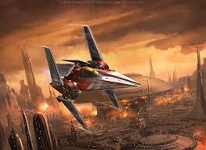
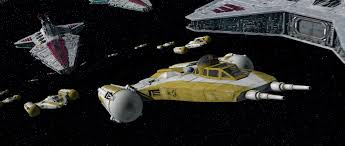
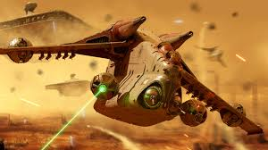

Republic Air Fighters
Primary starfighter and aerial assault craft used by the Republic during the Clone Wars.
-
ARC-170 Starfighter — Heavy assault starfighter with a crew of three and rear gunner. Used in both space and atmospheric battles.
 -
V-19 Torrent Starfighter — Agile and fold-winged fighter, often used in early engagements. Ideal for dogfighting.
 -
Z-95 Headhunter — Versatile fighter used for patrol and support. Less advanced but reliable.
 -
V-Wing Starfighter — High-speed starfighter introduced late in the war. Known for quick strikes and precision.
 -
Y-Wing Starfighter — Heavily armored bomber used in precision strikes. Early version of the Rebel Y-Wing.
 -
LAAT/i Gunship — Primary troop transport and air support gunship. Iconic for battlefield insertions and support.
